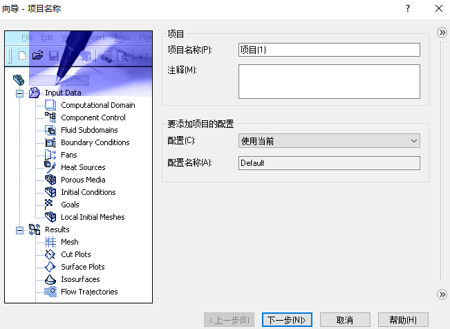
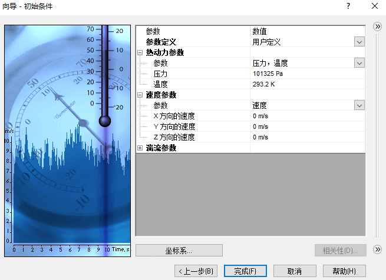
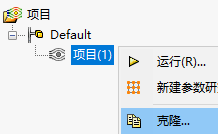

多孔介质分析
学习点：
使用多孔介质选项生成一个流体分析
通过虚设的实体获得需要的目标值
定义多孔介质材料
评价速度分布
案例分析
检查模型
创建项目
利用向导创建流体分析项目

项目名称
单位系统

分析类型

默认流体类型


壁面条件

初始条件
对这个分析来说，我们可以按默认定义进行
边界条件
入口
出口
多孔介质
考虑到多孔材质对经过流体具有一些“压降”等特性。我们可以在【多孔介质】编辑内，定义其材质的特性
多孔介质2
目标
为了查看气体从入口进来后，到出口的压力损失和速度情况，我们需要设置下目标进行捕获
入口

过程

出口
压降：插入方程式目标，把前三个目标做计算
组件控制
2净化器，我们设置了多孔介质，已经排除在外；
然后，过程目标使用的实体，需要也取消勾选，排除在计算之外
运行结果
切面图
流动轨迹
单向多孔介质
上述结果，发现流体流动在进入第一个净化器时是不均匀的，
多孔介质
修改入口第一个多孔介质，定义单向的多孔介质
计算结果
设置XY图
查看2个仿真项目的XY图比较